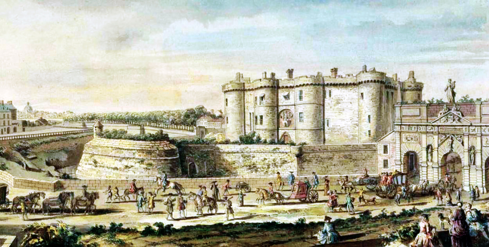

Voltaire was a versatile and prolific writer, producing works in almost every literary form, including plays, poems, novels, essays, and historical and scientific works. He wrote more than 20,000 letters and more than 2,000 books and pamphlets.[10] He was an outspoken advocate of civil liberties, despite the risk this placed him in under the strict censorship laws of the time. As a satirical polemicist, he frequently made use of his works to criticize intolerance, religious dogma, and the French institutions of his day.
1694 - François-Marie Arouet was born in Paris, the youngest of the five children of François Arouet.
1694 - Voltaire was baptized on 22 November 1694, with François de Castagnère, abbé de Châteauneuf [fr], and Marie Daumard, the wife of his mother's cousin, standing as godparents.
1713 - His father obtained a job for him as a secretary to the new French ambassador in the Netherlands.
1718 - The author adopted the name Voltaire, following his incarceration at the Bastille.

1719 - In a letter to Jean-Baptiste Rousseau in March, Voltaire concludes by asking that, if Rousseau wishes to send him a return letter, he do so by addressing it to Monsieur de Voltaire.
1720 - Voltaire's next play, Artémire, set in ancient Macedonia. It was a flop and only fragments of the text survive.
1726 - The french nobleman, the chevalier de Rohan-Chabot, taunted Voltaire about his change of name, and Voltaire retorted that his name would be honored while de Rohan would dishonor his.
1733 - Voltaire met Émilie du Châtelet (Marquise du Châtelet), a mathematician and married mother of three, who was 12 years his junior and with whom he was to have an affair for 16 years.
1736 - Frederick the Great, then Crown Prince of Prussia and a great admirer of Voltaire, initiated a correspondence with him.
1750 - Moved to Prussia at the invitation of Frederick the Great.
1758 - He bought an even larger estate at Ferney, on the French side of the Franco-Swiss border.
1778 - Voltaire returned for the first time in over 25 years to Paris, among other reasons to see the opening of his latest tragedy, Irene.
1778 - He soon became ill again and died on 30 May.